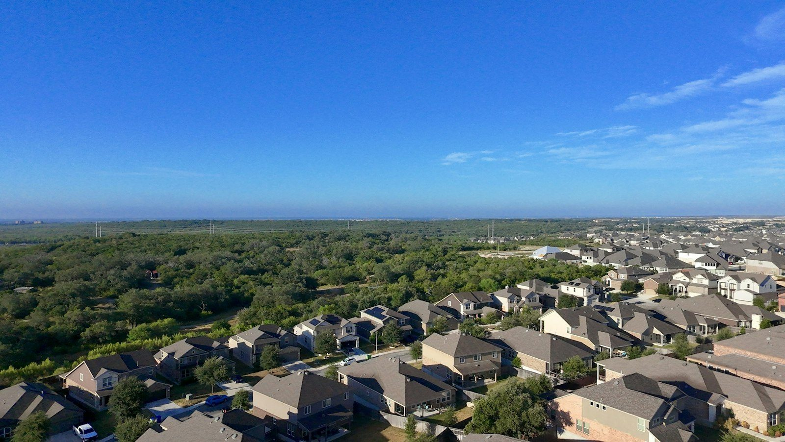
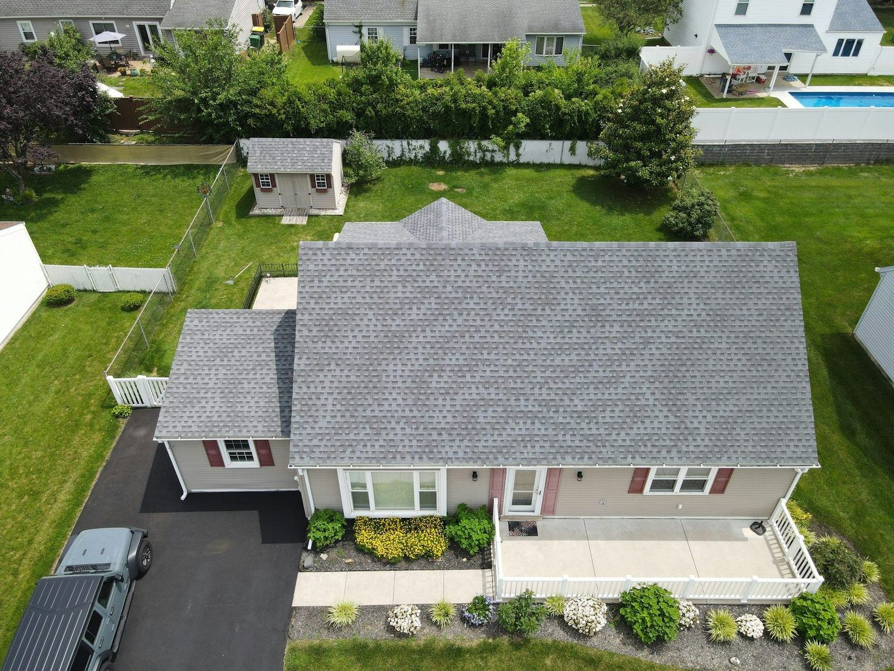
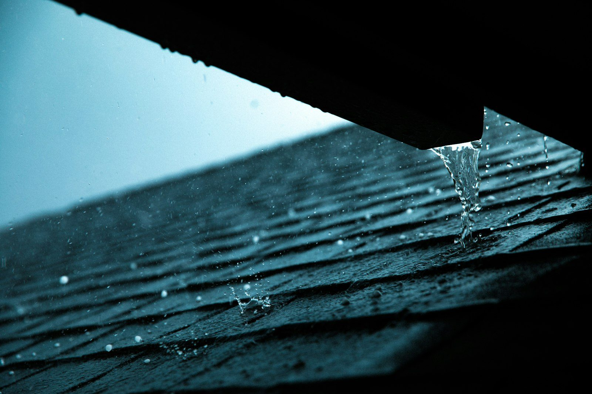
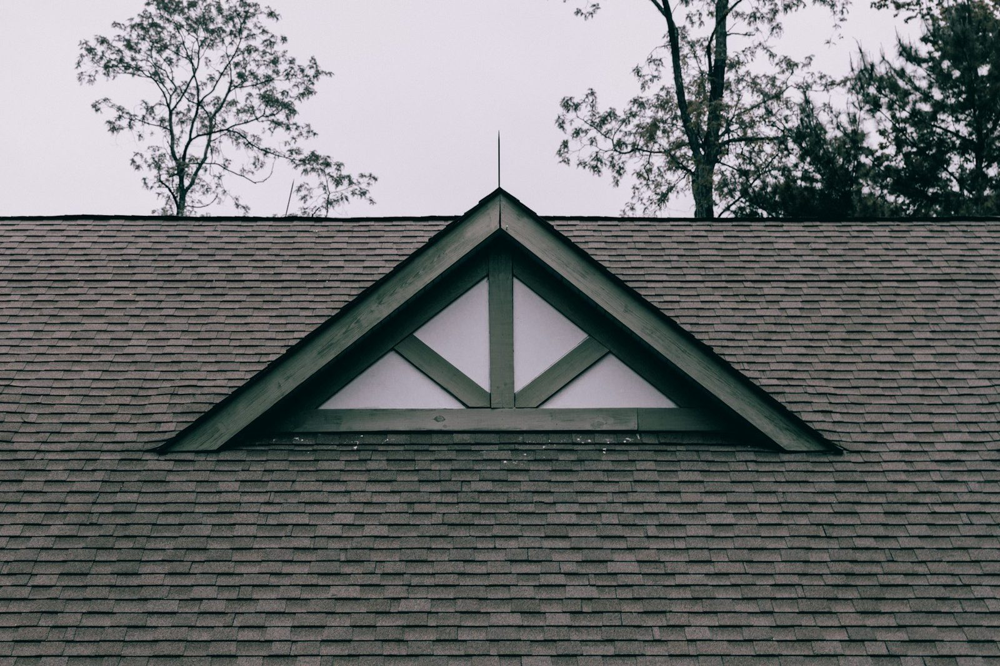

Neighborhood and wooded hills · IllustrativeSan Mateo · Peninsula roofing
Where fog
meets roof.
Residential roofing for the Peninsula. Get to know the places where shade, runoff and roof details meet.
(650) 241-4852Read the roof.
Tap a numbered point for a closer look at what damp weather does there.
North slope
A slope that gets less direct sun can stay damp longer. From the ground, note areas with raised green growth or repeated dark staining.
Gutter
Debris can slow runoff at the edge. Look for stains below the gutter or places where water spilled during recent rain.
Valley
A valley brings water from two slopes together. Leaves and other debris can collect there, and damaged roofing near the seam can let water through.
Skylight
Look indoors for changes around the frame after wet weather. A stain near a skylight can help locate a problem at the junction or flashing.


Peninsula · California
San Mateo.
Repair or
replace?
A localized issue
Repair addresses a limited area, such as damaged shingles or an open roof junction, when the surrounding covering is still sound.
Wear across the roof
Replacement renews the covering when wear is widespread, repairs keep recurring or the underlying condition needs attention.




Coastal damp · Fall checklist
Four things
to look for.
Take a look from the ground and inside the home before regular rains return.
Shaded slopes
Note where moss or dark streaks return on a slope that dries slowly.
Gutters and outlets
Look for leaf buildup and stains below the edge that suggest overflow.
Valleys and roof junctions
From below, note visible piles of debris or gaps at a roof-to-wall junction.
Ceilings and skylight frames
Watch for new stains near the top floor or around a skylight after rain.
Along the eaves.





Show us
what changed.
(650) 241-4852central.roofing@yahoo.comSan Mateo, CA 94401
5.0 stars on GoogleRead Google reviews